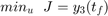
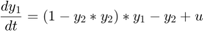
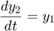
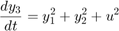
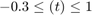
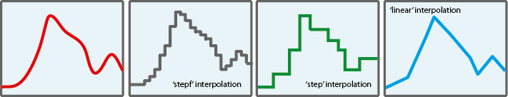
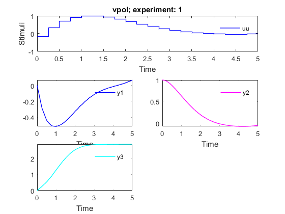

AMIGO_DO: Dynamic Optimization
Contents
Task description
- Solves multi- and single- objective dynamic optimization problems using the Control Vector Parameterization (CVP) approach
This tool can be used for optimization based modeling (dynamic flux
balance analysis (DFBA), enzyme activation optimization, etc.) and for
stimulation design (dynamic metabolic engineering, bioprocess
optimization, etc.)
- It may handle:
- Single or multi-objective cases
- Constraints on decision variables
- Constraints on state variables
- It may call several optimizers:
- LOCAL optimization methods: indirect and direct methods
- MULTISTART of local methods
- GLOBAL optimization methods: DE, SRES
- HYBRID optimization methods: eSS (as included in MEIGO), sequential hybrids
- MULTI-objective solvers: NSGAII plus the weighted sum method;
- Epsilon-constraint approach can be implemented using constraints
- Options:
- 'run_identifier' to keep different folders for different runs, this avoids overwriting
- 'nlp_solver' to rapidly change the optimization method
- 'reopt' to activate ('on') re-optimization
- 'reopt_local_solver' solver for re-optimization
- 'n_reOpts' number of re-optimizations
Call AMIGO_DO from command line
It is recommended to keep all inputs in a 'problem_file'.m. DO task can then be called in two different ways:
1. Using the inputs structure:
> problem_file
> AMIGO_DO(inputs)
2. Using the input file:
> AMIGO_DO('problem_file') > AMIGO_DO('problem_file','run_ident') > AMIGO_DO('problem_file','run_ident','nlp_solver') > AMIGO_DO('problem_file','run_ident','nlp_solver','on') (to activate re-optimization) > AMIGO_DO('problem_file','run_ident','nlp_solver','on','reopt_local_solver') > AMIGO_DO('problem_file','run_ident','nlp_solver','on','reopt_local_solver',r_reOpts)Example
This is a well know dynamic optimization problem often used as a benchmark case for DO methods. The objective is to simultaneously minimize the amplitude of the oscillations and the control effort subject to the oscillator dynamics and maximum and minimum allowed values for the control :





clear; %=========================== %RESULTS PATHS RELATED DATA %=========================== inputs.pathd.results_folder='vpol'; % Folder to keep results (in Results\) inputs.pathd.short_name='vpol'; % To identify figures and reports %====================== % MODEL RELATED DATA %====================== inputs.model.input_model_type='charmodelC'; % Model type inputs.model.n_st=3; % Number of states inputs.model.n_par=0; % Number of parameters inputs.model.n_stimulus=1; % Number of stimuli inputs.model.st_names=char('y1','y2','y3'); % Names of the states inputs.model.stimulus_names=char('uu'); % Names of the stimuli inputs.model.eqns=char(... % Model 'dy1=(1-y2*y2)*y1-y2+uu',... 'dy2=y1',... 'dy3=y1*y1+y2*y2+uu*uu'); %========================================== % Dynamic optimization problem formulation %========================================== inputs.DOsol.y0=[0 1 0]; %Initial conditions inputs.DOsol.tf_type='fixed'; %Process duration type: fixed or free inputs.DOsol.tf_guess=5; %Process duration %COST FUNCTION inputs.DOsol.DOcost_type='min'; %Type of problem: max/min inputs.DOsol.DOcost='y3'; %Cost functional %CVP (Control Vector Parameterization) DETAILS

inputs.DOsol.u_interp='stepf'; %Control definition %'sustained' |'stepf'|'step'|'linear'| inputs.DOsol.n_steps=20; inputs.DOsol.u_guess=0.7.*ones(1,inputs.DOsol.n_steps);% Initial guess for the input inputs.DOsol.u_min=-0.3.*ones(1,inputs.DOsol.n_steps); inputs.DOsol.u_max=1.*ones(1,inputs.DOsol.n_steps); % Minimum and maximum value for the input inputs.DOsol.t_con=0:5/inputs.DOsol.n_steps:5; % Input swithching times, including intial and % final times %================================== % NUMERICAL METHDOS RELATED DATA %================================== % SIMULATION inputs.ivpsol.ivpsolver='cvodes'; inputs.ivpsol.senssolver='odessa'; inputs.ivpsol.rtol=1.0D-7; inputs.ivpsol.atol=1.0D-7; %OPTIMIZATION inputs.nlpsol.nlpsolver='local_fmincon'; % In this case the problem can be solved with % a local optimizer
More information regarding the inputs used in this example can be found here.
%================================ % CALL AMIGO2 from COMMAND LINE %================================ % It is recommended to keep all inputs in a 'problem_file'.m. % AMIGO2 DO task can be called as follows: AMIGO_Prep(inputs); AMIGO_DO(inputs);
***********************************
AMIGO2, Copyright @CSIC
AMIGO2_R2016a [Oct 2015]
***********************************
*Date: 10-Dec-2015
------>Pre processing....this may take a few seconds.
------>Checking inputs....
------> WARNING message
AMIGO_check_model: You did not specify inputs.model.exe_type, standard will be assumed
------> Generating C code ...
------> Mexing files....
Building with 'MinGW64 Compiler (C)'.
D:\AMIGO2_REPO_2014\AMIGO2R2016\Kernel\IVP_solvers\cvodes\C_src4Amigo\src\src_amigo\simulate_amigo_model.c: In function 'simulate_amigo_model':
D:\AMIGO2_REPO_2014\AMIGO2R2016\Kernel\IVP_solvers\cvodes\C_src4Amigo\src\src_amigo\simulate_amigo_model.c:330:16: warning: passing argument 1 of 'mexPrintf' from incompatible pointer type
mexPrintf(stderr,"\nSolver failed at flag = CVode(cvode_mem, tout, y, &t, CV_TSTOP_RETURN);. . .\n");
^
In file included from D:\AMIGO2_REPO_2014\AMIGO2R2016\Kernel\IVP_solvers\cvodes\C_src4Amigo\include\include_amigo/simulate_amigo_model.h:4:0,
from D:\AMIGO2_REPO_2014\AMIGO2R2016\Kernel\IVP_solvers\cvodes\C_src4Amigo\src\src_amigo\simulate_amigo_model.c:1:
C:\MATLAB_R2015b_64/extern/include/mex.h:202:27: note: expected 'const char *' but argument is of type 'struct FILE *'
LIBMWMEX_API_EXTERN_C int mexPrintf(
^
D:\AMIGO2_REPO_2014\AMIGO2R2016\Kernel\IVP_solvers\cvodes\C_src4Amigo\src\src_interface\interface_with_matlab.c: In function 'mexFunction':
D:\AMIGO2_REPO_2014\AMIGO2R2016\Kernel\IVP_solvers\cvodes\C_src4Amigo\src\src_interface\interface_with_matlab.c:200:17: warning: assignment from incompatible pointer type
stats_struct = mxGetPr(plhs[5]);
^
MEX completed successfully.
------>Files generated....
***********************************
AMIGO2, Copyright @CSIC
AMIGO2_R2016a [Oct 2015]
***********************************
*Date: 10-Dec-2015
------>Checking inputs....
The following files have been created:
ans =
D:\AMIGO2_REPO_2014\AMIGO2R2016\Results\vpol\AMIGO_DOcost_vpol.m
ans =
D:\AMIGO2_REPO_2014\AMIGO2R2016\Results\vpol\AMIGO_DOconst_vpol.m
*************************************************************************
------>IMPORTANT!!: Most of the optimization solvers have their own
tunning parameters (options).
Defaults have been assigned in the *NLPsolver*_options
files. You may need to modify those settings for your
particular problem, specially:
- maximum number of function evaluations /iterations,
- maximum computational time
******************************************************************
Solving the NLP problem with Local Optimizer: fmincon
Summary of selected local solver (fmincon) options:
maxeval: 500,
maxtime: 60
>Bounds on the unknowns:
v_guess(1)=0.700000; v_min(1)=-0.300000; v_max(1)=1.000000;
v_guess(2)=0.700000; v_min(2)=-0.300000; v_max(2)=1.000000;
v_guess(3)=0.700000; v_min(3)=-0.300000; v_max(3)=1.000000;
v_guess(4)=0.700000; v_min(4)=-0.300000; v_max(4)=1.000000;
v_guess(5)=0.700000; v_min(5)=-0.300000; v_max(5)=1.000000;
v_guess(6)=0.700000; v_min(6)=-0.300000; v_max(6)=1.000000;
v_guess(7)=0.700000; v_min(7)=-0.300000; v_max(7)=1.000000;
v_guess(8)=0.700000; v_min(8)=-0.300000; v_max(8)=1.000000;
v_guess(9)=0.700000; v_min(9)=-0.300000; v_max(9)=1.000000;
v_guess(10)=0.700000; v_min(10)=-0.300000; v_max(10)=1.000000;
v_guess(11)=0.700000; v_min(11)=-0.300000; v_max(11)=1.000000;
v_guess(12)=0.700000; v_min(12)=-0.300000; v_max(12)=1.000000;
v_guess(13)=0.700000; v_min(13)=-0.300000; v_max(13)=1.000000;
v_guess(14)=0.700000; v_min(14)=-0.300000; v_max(14)=1.000000;
v_guess(15)=0.700000; v_min(15)=-0.300000; v_max(15)=1.000000;
v_guess(16)=0.700000; v_min(16)=-0.300000; v_max(16)=1.000000;
v_guess(17)=0.700000; v_min(17)=-0.300000; v_max(17)=1.000000;
v_guess(18)=0.700000; v_min(18)=-0.300000; v_max(18)=1.000000;
v_guess(19)=0.700000; v_min(19)=-0.300000; v_max(19)=1.000000;
v_guess(20)=0.700000; v_min(20)=-0.300000; v_max(20)=1.000000;
-----------------------------------------------
Initial value problem related active settings
-----------------------------------------------
ivpsolver: cvodes
RelTol: 1e-07
AbsTol: 1e-07
MaxStepSize: Inf
MaxNumberOfSteps: 100000
Local search number: 1
Call local solver: FMINCON
Initial point function value: 5.438106
First-order Norm of
Iter F-count f(x) Feasibility optimality step
0 21 5.438106e+00 0.000e+00 1.052e+00
1 43 5.198116e+00 0.000e+00 4.551e+00 8.332e-01
2 64 3.738603e+00 0.000e+00 1.916e+00 7.226e-01
3 87 3.313385e+00 0.000e+00 6.011e-01 3.963e-01
4 108 3.064873e+00 0.000e+00 1.224e-01 3.753e-01
5 129 3.061938e+00 0.000e+00 1.340e-01 4.299e-02
6 150 3.047912e+00 0.000e+00 1.000e-01 2.451e-02
7 171 2.940273e+00 0.000e+00 8.307e-02 2.387e-01
8 192 2.913386e+00 0.000e+00 4.305e-02 1.188e-01
9 213 2.911377e+00 0.000e+00 2.002e-02 1.635e-02
10 234 2.891452e+00 0.000e+00 2.443e-02 1.295e-01
11 255 2.887061e+00 0.000e+00 7.319e-03 4.632e-02
12 276 2.886551e+00 0.000e+00 4.005e-03 9.076e-03
13 297 2.883385e+00 0.000e+00 7.697e-03 5.075e-02
14 318 2.882620e+00 0.000e+00 1.378e-03 1.861e-02
15 339 2.882531e+00 0.000e+00 8.011e-04 2.810e-03
16 360 2.881945e+00 0.000e+00 1.926e-03 2.004e-02
17 381 2.881783e+00 0.000e+00 4.287e-04 7.354e-03
18 402 2.881764e+00 0.000e+00 2.426e-04 1.172e-03
19 423 2.881763e+00 0.000e+00 1.600e-04 5.548e-04
20 444 2.881618e+00 0.000e+00 6.380e-04 8.063e-03
21 465 2.881581e+00 0.000e+00 1.334e-04 2.416e-03
22 486 2.881579e+00 0.000e+00 3.201e-05 1.823e-04
23 507 2.881539e+00 0.000e+00 2.598e-04 2.888e-03
24 528 2.881534e+00 0.000e+00 4.292e-05 4.308e-04
25 549 2.881534e+00 0.000e+00 1.526e-05 5.680e-05
26 570 2.881534e+00 0.000e+00 6.400e-06 3.347e-05
Local minimum found that satisfies the constraints.
Optimization completed because the objective function is non-decreasing in
feasible directions, to within the selected value of the function tolerance,
and constraints are satisfied to within the selected value of the constraint tolerance.
Local solution function value: 2.881534
Number of function evaluations in the local search: 571
CPU Time of the local search: 1.106536 seconds
----------------------------------------
>>>> DYNAMIC OPTIMIZATION:
----------------------------------------
>>>> Best objective function: min = 2.881534e+00
>>>> Best control profile:
>>>> Control u: 1
-0.135488 0.352607 0.706628 0.925912 0.999452 0.999359 0.944141 0.826243 0.688229 0.547192 0.414602 0.297366 0.198983 0.120510 0.061426 0.020233 -0.005068 -0.016666 -0.016734 -0.007335
>>>> Switching times:
0.000000 0.250000 0.500000 0.750000 1.000000 1.250000 1.500000 1.750000 2.000000 2.250000 2.500000 2.750000 3.000000 3.250000 3.500000 3.750000 4.000000 4.250000 4.500000 4.750000 5.000000
>>>> Final time: 5.000000
>>>> Constraints violation (c<=0): Equality constraints, Inequality constraints, Control constraints
c(1)=0.00e+00;
------>Plotting results....
Sorry, convergence curve plot is not available for local solvers, at the moment
<strong>
------>Results (report and struct_results.mat) and plots were kept in the directory:
</strong><strong>D:\AMIGO2_REPO_2014\AMIGO2R2016\Results\vpol\OD_vpol_local_fmincon_run1</strong>
Click <a href="matlab: cd('D:\AMIGO2_REPO_2014\AMIGO2R2016\Results\vpol\OD_vpol_local_fmincon_run1')">here</a> to go to the results folder or <a href="matlab: load('D:\AMIGO2_REPO_2014\AMIGO2R2016\Results\vpol\OD_vpol_local_fmincon_run1\strreport_vpol_run1.mat')">here</a> to load the results.
 See also
References
Problem formulation was taken from:
Tanartkit, P., & Biegler, L.T. (1995). Stable decomposition for dynamic optimization. I&EC Res., 34, 1253-1266.
Vassiliadis, V. S.; Balsa-Canto, E.; Banga, J. R. Second order sensitivities of general dynamic systems with application to optimal control problems. Chem. Eng. Sci. 1999, 54, 3851.
NLP solvers
Banga, J. R., E. Balsa-Canto, C. G. Moles and A. A. Alonso. Dynamic optimization of bioprocesses: Efficient and robust numerical strategies. Journal of Biotechnology 2005, 117(4):407-419.
Egea JA, Henriques D, Cokelaer T, Villaverde AF, MacNamara A, Danciu DP, Banga JR and Saez-Rodriguez J MEIGO: an open-source software suite based on metaheuristics for global optimization in systems biology and bioinformatics. BMC Bioinformatics 2014, 15:136.
% AMIGO_htmldoc_inputs(inputs,fullfile(pwd,'html','doinputs.html'));